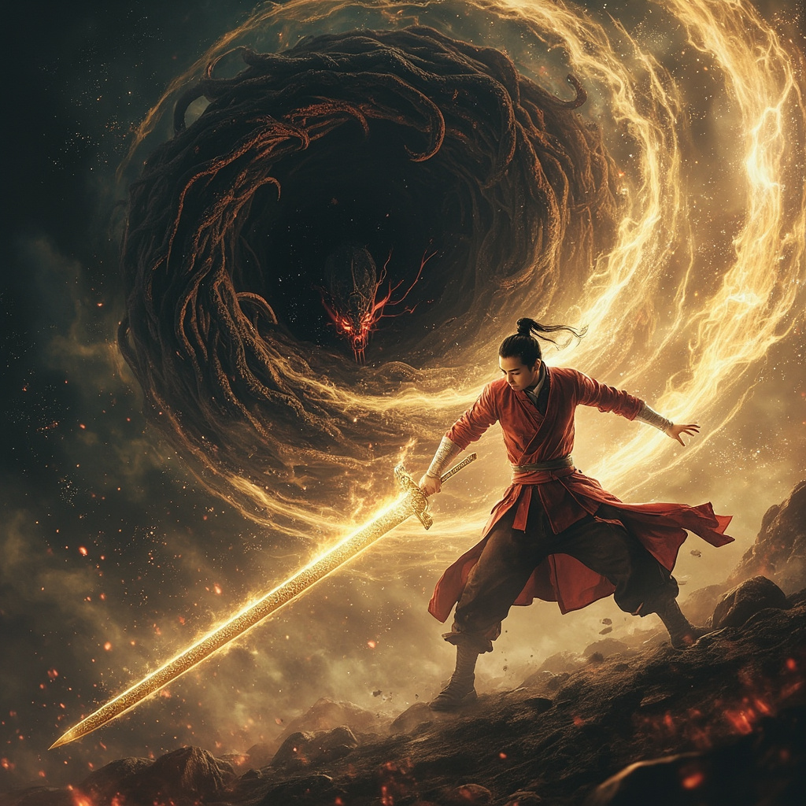
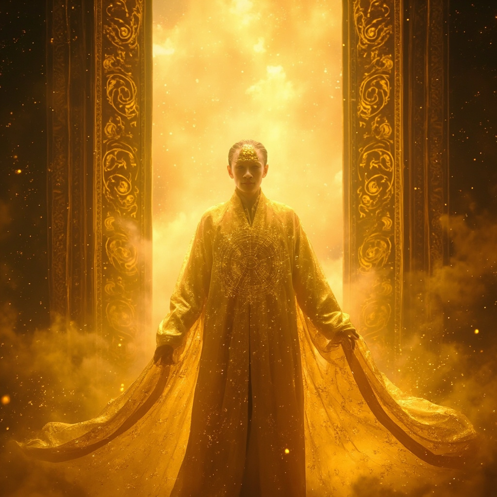

第30章：設置
🎧 點擊播放有聲朗讀
🎧 點擊播放有聲朗讀
金色大門從虛空中緩緩開啟，溫暖神聖的光芒傾瀉而出。鴻蒙守護者穿著繡滿旋轉星圖的金色長袍走出，宣佈林塵是被選中的人，將肩負拯救多元宇宙的使命。
鴻蒙將金色光芒注入林塵體內，銀灰色的靈芯系統蛻變為金色鴻蒙靈芯。林塵感受到無數知識、力量、記憶如潮水湧入，他成為了整個多元宇宙的一部分。

林塵與混沌吞噬者展開殊死決戰！金色屏障瞬間消融敵方觸手，鴻蒙靈芯化為刻滿古老符文的神秘金劍，雙方能量激烈碰撞，空間被撕裂出無數裂縫。

林塵使出終極必殺技「多元宇宙歸元斬」！比太陽還要耀眼的金光從劍尖迸發，混沌吞噬者發出淒厲至極的惨叫，在金色光芒中如同雪遇烈日，迅速消融瓦解，化為虛無。
紫霄世界歡呼雷動，修士們激動相擁落淚。林塵雖耗盡力量，卻迎來了紫雲重現的美麗天際。鴻蒙預告戰鬥未完，林塵微笑望向遠方：「走吧，讓我們開始新的旅程。」